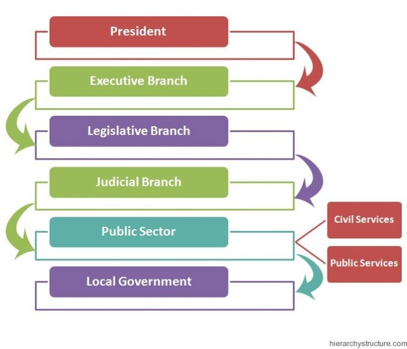

Politics

Well, Irelands a very funny place. It’s a strange and a troubled land. This journey started 900 years ago, and lasted for 800 of those years. The earlier years (pre-1800) saw a few rebellions, but nothing large enough to remove the British completely from the isle. In 1798 there was a large Irish rebellion. This directly led to the British cracked down in 1800, which merged the Irish and British. This went on for a long while, and during that time many injustices and mismanagements happened, especially during the potato famine. This all culminated in the Easter Rising, which took place in 1916. During the Rising, 1,250 people in Dublin and 2,000-3,000 else where rose up and took British assets. The others spread throughout the country did not really see much combat, but for 5 days Dublin was occupied by Rebels. One of the most iconic events was the raising of the Irish tricolor flag on the GPO or general post office. The soldiers fought valiantly, but less showed up than expected, and they failed. The British, however, unwisely executed many of the leaders, which sparked a thought in the minds of many Irishmen. They thought that maybe, just maybe those people died for something during the rising. And that directly led to the revolution in 1919 which continued until 1921 when the Irish won the fight for home rule, and became a nation once again.
There have been two major challenges to Irish sovereignty. The first is the Irish civil war, which spanned the time from a little after the revolution had ended, and continued until mid-1923. This saw the new government of Ireland pitted against people who opposed the treaty which gave Ireland home rule, because they wanted to be fully independent. This saw many of the paramilitary forces that worked to create this new Irish state turn against it. The British supported the pro-treaty government with material. It started witch fierce fighting, but ended as anti-treaty politicians gained power and politically moved away from England, forging its own path.
For those wondering, I would not consider the Troubles a threat to Irish sovereignty. This was because it only took place in the north, and was really only concerned with the north. While it did see British troops on northern Irish land, the Irish worked with British in containing the situation.
There are a couple minorities in Ireland, Irish Travelers, Protestants, and I guess Muslims. There are very small amounts of people in these groups however, and there is no push to unify the country because it is pretty much unified culturally. Ireland is one nation which no other nations in it. It is also a compact state, meaning that most of the sides are equidistant from the center. Its northern and only land border is open and free to cross; however, there are defiantly border emplacements in certain areas. There are no large internal boundaries; however, there is a boundary in the north that did not used to be there. There are no exclaves, and this country is not land locked. Ireland has a unitary government, and it is broken up into providences. It is a Democracy, with the Dáil and possibly the GPO being important government landmarks. A fairly large centripetal force that pops up from time to time is the proposition of uniting Ireland and Northern Ireland together. It is 169th on the fragile state index with spike of 2012 and 2014. They fall at number 20 on the corruption index with a score of 72. They are part of the European Union, UN, Interpol, IOC, UNESCO.
.